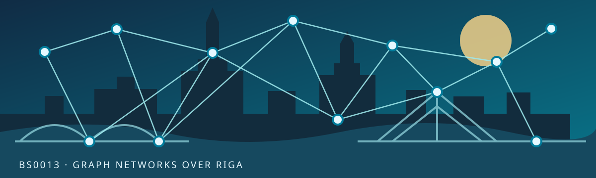

Week 11 · Graphs · Interactive lesson · Version 3
Graph Data Structures
One abstract graph, many concrete representations. Explore how storage changes operations and algorithm costs.

Essential path: sections 1–7, 12–14 (45–60 minutes). Algorithm enrichment: sections 8–11 (another 45–60 minutes). Browser models are not C++ execution. The assessed lab remains separate.
Progress is local to your browser.
1. Graphs in the real world
A graph G = (V, E) models entities (vertices) and relationships (edges). A road network connects junctions; a social network connects people; a dependency graph connects software modules. A graph need not have a root or be connected. In a directed graph, edges are ordered pairs; in an undirected graph they are unordered. Edge weights express costs, distances or capacities.
Use the editor presets to explore a fictional transport network, software dependencies, cycles and disconnected components. The diagram is an abstraction, not a geographic map.
C++ — Vertex IDs and application data
Illustrative fragment · complete independent program linked below. Headers: <cstddef>, <string>, <vector>, <utility>.
using Vertex = std::size_t;
struct Location {
std::string name;
double latitude, longitude;
};
std::vector<Location> locations;
using Edge = std::pair<Vertex, Vertex>;Separate topology from payloads. A vertex ID indexes a location record; an edge stores IDs rather than copying locations. This matches the editor's entity/relationship distinction.
Complexity: Dense IDs give constant-time indexed payload access. External sparse IDs need a mapping; vector growth can invalidate references.
Common mistake: Do not treat an arbitrary external identifier as a vector index.
Try: What metadata would you keep separate for a software dependency graph?
Open complete C++20 example: representations.cpp · View source on GitHub
2. From trees to graphs
Every undirected tree is connected and acyclic, with E = V − 1. The converse needs connectivity or acyclicity as an additional condition. A forest may have several components. Add an edge between two vertices already connected by a path to create a cycle; deleting a bridge disconnects a graph.
Tree transformation
Load the binary tree in the shared graph editor, then add or remove edges. The connected-component and cycle summary updates automatically.
Go to editorC++ — Tree ownership versus graph relationships
Illustrative fragment. Headers: <memory>, <vector>, <cstddef>.
struct TreeNode {
int key;
std::unique_ptr<TreeNode> left, right;
};
using Vertex = std::size_t;
struct VertexData {
std::vector<Vertex> neighbors;
};A rooted tree has natural hierarchical ownership. A general graph may contain cycles and shared neighbours, so adjacency IDs can be non-owning relationships into a container of vertices.
Complexity: The topology storage of a tree is linear in vertex count; a graph may have Θ(V²) edges. Container ownership and adjacency representation are independent decisions.
Common mistake: An owning shared_ptr on every edge can create reference cycles; an integer ID is not a pointer or an ownership claim.
Try: Why does deleting a graph vertex require considering incoming edges as well as outgoing edges?
3. Construct a graph
The lab uses a fixed vertex set 0…V−1, no parallel edges, and permits self-loops. A successful insertion/removal changes the logical edge set; duplicates and missing removals do not. Exploration mode allows stable non-contiguous IDs and weighted edges.
Changing direction/weights starts an empty graph with the same vertices (confirmation required). Lab mode renumbers and clears edges. Click a vertex to choose endpoints or use selectors; drag to reposition. Edit a weight directly with Update weight.
Random graph / interchange
C++ — Graph ADT, contracts and vertex types
Illustrative fragment. Headers: <cstddef>, <vector>, <stdexcept>.
using Vertex = std::size_t;
// Illustrative declarations, not lab implementations:
bool has_edge(Vertex u, Vertex v) const;
bool add_edge(Vertex u, Vertex v);
std::vector<Vertex> neighbors(Vertex u) const;These member declarations correspond to the lab's public interface. The lab has a fixed vertex set 0…V−1, no parallel edges, optional directedness and one logical edge for a self-loop. The exploration editor additionally allows vertex deletion and weights; those are not required in the lab.
Complexity: ADT semantics do not specify one storage complexity. Costs depend on the selected representation and sorted-output contract.
Common mistake: Invalid IDs must be rejected with std::out_of_range; do not silently coerce them. std::size_t is unsigned, so -1 is not a good unchecked ID sentinel.
Try: Explain why adding an existing edge should report false without changing the edge count.
4. Representations
Three representations encode the same logical graph. The matrix uses rows as sources and columns as destinations. An undirected non-loop edge occupies two cells or adjacency entries; a loop occupies one. Edge lists keep one record per logical edge. Selecting an edge highlights all representations; clicking a matrix cell toggles it.
Adjacency matrix
Raw adjacency list
Logical edge list
Flat row-major memory
For dense IDs, cell (u,v) has offset u × V + v; for stable sparse IDs, map IDs to row/column positions first. A vector of vectors has independent row allocations.
Weighted absence is denoted by ∅, not zero. In the unweighted matrix, 0 means no edge and 1 means an edge.
C++ — Edge list: contiguous records
Illustrative fragment · complete independent program linked below. Headers: <vector>, <utility>, <cstddef>.
using Vertex = std::size_t;
using Edge = std::pair<Vertex, Vertex>;
std::vector<Edge> edges{
{0, 1}, {0, 3}, {1, 2}, {2, 0}
};This is the directed lecture graph. Each pair stores source and destination; the vector contains one record per logical edge. Keep vertex count separately, since isolated vertices do not occur in the edge records.
Complexity: Edge storage Θ(E), sequential enumeration Θ(E), membership O(E) without indexing. Capacity can exceed size.
Common mistake: Do not infer V solely from the largest endpoint: the empty graph and isolated vertices make that unreliable.
Try: What changes if an undirected edge is stored in canonical endpoint order?
Open complete C++20 example: representations.cpp · View source on GitHub
C++ — Flat byte matrix and row-major indexing
Illustrative fragment · complete independent program linked below. Headers: <vector>, <cstddef>, <limits>.
std::size_t V = 4;
std::vector<unsigned char> matrix(V * V, 0);
// With validated u and v:
const std::size_t offset = u * V + v;The flat vector has one contiguous allocation for its elements. The browser's flat memory view corresponds to offset u×V+v. The zero-filled vector is an empty graph; the linked example instead contains a preconstructed lecture matrix.
Complexity: Storage Θ(V²), indexed access Θ(1), row scan Θ(V). Before allocating a general V×V matrix, check V != 0 and V > max_size/V to avoid overflow or impossible allocation.
Common mistake: Do not confuse vector<vector<unsigned char>> with one contiguous matrix. A byte per cell is not bit packing; vector<bool> has specialized proxy semantics.
Try: For V=4, locate edge 2→0 in the flat array without running code.
Open complete C++20 example: representations.cpp · View source on GitHub
C++ — Adjacency vectors: buckets, size and capacity
Illustrative fragment · complete independent program linked below. Headers: <vector>, <cstddef>.
using Vertex = std::size_t;
std::vector<std::vector<Vertex>> adj{
{1, 3}, {2}, {0}, {}
};The outer vector contains one bucket per vertex; the elements of each inner vector are contiguous but different buckets have separate storage. An undirected non-loop edge occurs in two buckets, a loop once.
Complexity: Θ(V+E) storage under the usual bounded-capacity model; raw bucket enumeration Θ(d+1), with d the stored outgoing entries. Append amortized O(1), not worst-case O(1).
Common mistake: A vertex with no neighbours still needs an empty bucket. Reallocation of a bucket invalidates references and iterators into its elements.
Try: Which raw bucket would be inspected for membership of 2→1?
Open complete C++20 example: representations.cpp · View source on GitHub
5. Operation microscope
Run a read-only simulation on the shared graph snapshot. Step through highlighted storage positions in the operation animation below. These counts measure examined storage positions and conceptual writes, not CPU instructions, time, allocator work or sort comparisons. Matrix operations are direct indexed access; unsorted buckets require a scan. Mutation simulations do not edit the shared graph.
| Operation | Matrix | Unsorted vector adjacency list |
|---|---|---|
| Membership | Θ(1) | O(d) |
| Duplicate-safe insert/remove | Θ(1) | O(d) search; amortized growth |
| Raw enumeration | Θ(V) | Θ(d+1) |
| Sorted output | Θ(V) | O(1+d log(d+1)) |
| Storage | Θ(V²) | Θ(V+E) |
Undirected mutations may touch both endpoint buckets. A vector insertion can reallocate. Fixed vertex count avoids matrix resizing.
C++ — STL primitives for membership and mutation
Illustrative fragment. Headers: <algorithm>, <vector>.
std::vector<int> bucket{7, 4, 9};
auto it = std::find(bucket.begin(), bucket.end(), 4);
if (it != bucket.end()) {
// Found a matching element.
}
// In an unrelated demonstration:
bucket.push_back(12);The microscope counts inspected storage positions. std::find performs a linear search; push_back may grow a vector. Erasing from the middle preserves order but shifts later elements; swap-with-last is an alternative when order is irrelevant. These are generic container mechanisms, not completed graph methods.
Complexity: Find O(d); append amortized O(1), worst-case Θ(d) when relocating; middle erase O(d). Undirected graph mutation may touch both endpoint buckets.
Common mistake: Never dereference end(). Do not reuse a possibly invalidated iterator after push_back or erase.
Try: Which of these costs appears in the microscope, and which costs are intentionally excluded?
C++ — Raw adjacency order versus sorted output
Illustrative fragment. Headers: <algorithm>, <vector>.
const std::vector<int> bucket{3, 1, 2};
auto result = bucket; // Own copy
std::sort(result.begin(), result.end());
const auto& raw = bucket; // Borrow, no copyThe lab's neighbors(u) contract returns ascending IDs even though the stored adjacency bucket is unsorted. This standalone vector example shows how copying and sorting differ from reading through a reference.
Complexity: Copy Θ(d) time and space; sorting O(d log(d+1)) comparisons; borrowing Θ(1). Raw enumeration does not require sorting.
Common mistake: Do not sort the original bucket merely to return sorted output. Do not keep a borrowed reference across invalidating mutations.
Try: Explain why deterministic neighbour order can change the complexity of a traversal using the public API.
6. Invariant debugger
Correct structures maintain valid vertex IDs, unique neighbours, symmetry for undirected graphs, correct logical edge counts and sorted API output. Try identifying the defect and then reveal the explanation. Corrupted examples are isolated from the live graph.
C++ — Assertions, exceptions and public tests
Illustrative fragment. Headers: <cassert>, <stdexcept>, <vector>.
std::vector<std::vector<int>> A{
{0, 1}, {1, 0}
};
assert(A[0][1] == A[1][0]);
// Public argument validation, independent of asserts:
if (requested_id >= A.size()) {
throw std::out_of_range("vertex ID");
}An assertion documents an internal invariant. The public graph contract requires argument validation even in release builds. Test duplicate insertion, missing removal, loops, isolates, invalid IDs and directed versus undirected semantics. Use the lab's public tests and sanitizer script.
Complexity: One reciprocal-cell check is Θ(1); checking every matrix cell Θ(V²). Validation cost depends on what is checked.
Common mistake: Assertions may disappear when NDEBUG is defined. Sanitizers detect classes of memory/undefined behaviour errors, not mathematical graph correctness.
Try: Design a test that distinguishes a logical edge count from the number of stored adjacency entries.
7. Sparse and dense graphs
For loop-free directed graphs E ≤ V(V−1); for undirected graphs E ≤ V(V−1)/2. Density is E divided by that maximum (undefined when there are no possible edges). Sparse means E grows approximately linearly in V; dense means E grows quadratically. A byte matrix stores V² bytes; a bit-packed matrix uses ceil(V²/8). A vector adjacency list needs bucket metadata plus entries; an undirected edge contributes two entries. No allocation is performed by the calculator.
Illustrative estimates exclude excess capacity, allocators and common metadata. Edge-list storage excludes separate vertex metadata. Not a C++ benchmark.
C++ — Measure sizeof, size and capacity
Illustrative fragment · complete independent program linked below. Headers: <iostream>, <vector>, <cstddef>.
using Vertex = std::size_t;
std::vector<Vertex> bucket{1, 3};
bucket.reserve(16);
std::cout << sizeof(Vertex) << '\n';
std::cout << sizeof(bucket) << '\n';
std::cout << bucket.size() << ' '
<< bucket.capacity() << '\n';
auto element_bytes = bucket.capacity() * sizeof(Vertex);The calculator's 4-byte ID and 24-byte bucket metadata are adjustable assumptions, not guaranteed C++ sizes. The lab uses std::size_t, commonly eight bytes on a 64-bit machine. Measure them on your Codespace. sizeof(vector) excludes dynamically allocated element storage.
Complexity: Reserved payload is capacity×sizeof(element); a nested-vector estimate sums outer reserved object storage and inner reserved payloads. It excludes allocator overhead and the outer object itself.
Common mistake: Do not use sizeof(vector) as the total allocated memory; do not treat reserve as resize.
Try: Set the density calculator's ID and metadata values to your measured sizes and compare the crossover.
Open complete C++20 example: memory-layout.cpp · View source on GitHub
8. Breadth-first search
BFS uses a FIFO queue and discovers vertices in nondecreasing unweighted distance from a source. Mark on enqueue to prevent duplicate frontier entries. Parent pointers reconstruct a shortest path by edge count. A single-source traversal may leave vertices unreachable; a traversal forest restarts at undiscovered roots.
Try the directed lecture graph from vertex 0. The first queue is [0]; processing 0 discovers 1 and 3. The cycle cannot repeat because 0 is already discovered. With raw adjacency lists a full traversal is Θ(V+E); with a matrix scanning all rows it is Θ(V²). The simulator optionally sorts neighbour order; sorting costs are not included in scan counts.
For a full forest, distances are relative to the displayed component root, not the original source.
C++ — FIFO traversal with std::queue
Illustrative fragment · complete independent program linked below. Headers: <queue>, <vector>.
std::vector<int> distance(adj.size(), -1);
std::queue<int> frontier;
distance[source] = 0;
frontier.push(source);
while (!frontier.empty()) {
const int u = frontier.front();
frontier.pop();
for (int v : adj[u]) {
if (distance[v] != -1) continue;
distance[v] = distance[u] + 1;
frontier.push(v);
}
}Fragment assumes valid dense int IDs, a read-only adjacency list and a valid source. Distance -1 denotes undiscovered. Assign distance when enqueuing, not after popping. The full program also returns predecessors and validates the source.
Complexity: For a single source with R reachable vertices and E_R stored outgoing entries, Θ(V+E_R) time including initialization and O(V) auxiliary memory. Full raw-list traversal Θ(V+E); matrix scanning costs Θ(V+RV). Sorting buckets changes these costs.
Common mistake: front() and pop() require nonempty queue; pop() does not return the removed value. Marking only on dequeue can introduce repeated frontier entries.
Try: Run the directed lecture example and predict the distance of vertex 3 before stepping.
Open complete C++20 example: bfs.cpp · View source on GitHub
C++ — Predecessors and path reconstruction
Illustrative fragment · complete independent program linked below. Headers: <algorithm>, <vector>.
// During first discovery of v:
parent[v] = u;
// After BFS, assuming a valid target and reachable path:
std::vector<int> path;
for (int v = target; v != -1; v = parent[v]) {
path.push_back(v);
}
std::reverse(path.begin(), path.end());Use a signed predecessor type with -1 for the root. Check reachability before reconstructing; for an unreachable target return an empty path. The standalone program includes a source-to-source and an unreachable test. Parent links form a BFS tree, not the original graph.
Complexity: Θ(k) time and space for a path containing k vertices; no need to run traversal again.
Common mistake: A parent chain from a different forest root is not a path from the requested source. Never follow uninitialized predecessors.
Try: Why can a BFS tree contain fewer edges than the original graph?
Open complete C++20 example: bfs.cpp · View source on GitHub
9. Depth-first search
DFS explores one branch before returning. A stack of frames (vertex, next neighbour index) can reproduce recursive calls under the same neighbour ordering. Compare two independent implementations below. Entry/exit timestamps expose backtracking; tree depth is not shortest distance. A search target stops on discovery; a full forest restarts at every undiscovered root.
Predict the order before stepping. Try the disconnected graph, then change the neighbour order.
C++ — Recursive DFS and call-frame state
Illustrative fragment · complete independent program linked below. Headers: <vector>.
void dfs(const std::vector<std::vector<int>>& adj,
int u, std::vector<char>& visited) {
visited[u] = true;
for (int v : adj[u]) {
if (!visited[v]) dfs(adj, v, visited);
}
}Valid dense IDs and a suitably small graph are preconditions. Mark on entry. Each call remembers its current loop position and returns after processing the bucket; the full demo records entry/exit timestamps for a traversal forest.
Complexity: Full raw-list DFS Θ(V+E), O(V) visited state and O(V) worst-case recursive stack depth.
Common mistake: Do not pass the graph by value. Deep recursion can exhaust the process stack even if the algorithm is asymptotically linear.
Try: Which calls remain suspended when the visualization first reaches the deepest vertex?
Open complete C++20 example: dfs.cpp · View source on GitHub
C++ — Explicit stack frames and backtracking
Illustrative fragment · complete independent program linked below. Headers: <stack>, <cstddef>, <vector>.
struct Frame {
int u;
std::size_t next = 0;
};
std::stack<Frame> frames;
// Inside the traversal, with a nonempty stack:
auto& f = frames.top();
if (f.next == adj[f.u].size()) {
frames.pop();
} else {
const int v = adj[f.u][f.next++];
// If undiscovered: mark, then push Frame{v, 0}.
}An explicit frame stores the next neighbour index. That reproduces the suspended recursive loop. The full program compares entry, exit and discovery sequences under identical adjacency order. A simple stack of vertex IDs may produce a different DFS tree.
Complexity: Θ(V+E) full raw-list traversal, O(V) auxiliary memory. A frame is constant-sized; no adjacency bucket copy is required.
Common mistake: Do not use a reference to the top frame after popping it, or assume it remains valid after modifying the stack.
Try: What information is lost if a frame stores only the vertex ID?
Open complete C++20 example: dfs.cpp · View source on GitHub
10. Weighted graphs
Weights attach a cost to each edge. Fewer hops need not mean lower total cost. The graph below has two routes between vertices 0 and 4. Change any weight to compare BFS and Dijkstra immediately. A zero-weight edge is distinct from an absent edge.
C++ — Named weighted edges and optional matrix cells
Illustrative fragment · complete independent program linked below. Headers: <optional>, <vector>.
struct WeightedEdge {
int to;
int weight;
};
std::vector<std::vector<WeightedEdge>> adj{
{{1, 10}, {2, 2}}, {{3, 0}}, {{1, 1}}, {}, {}
};
std::vector<std::optional<int>> matrix(25);
matrix[1 * 5 + 3] = 0; // Present, zero costThe named fields make relaxation easier to read than pair.first and pair.second. An optional cell distinguishes absence from a valid zero-weight edge. The list and matrix snippets demonstrate storage independently (the matrix shows just one edge).
Complexity: One additional weight per list entry; an optional matrix remains Θ(V²) cells with implementation-dependent element size.
Common mistake: Do not write if (*cell) to test presence: zero would be treated as false. Test cell.has_value() or the optional itself before dereferencing.
Try: How would you represent a negative edge while preventing its use in Dijkstra?
Open complete C++20 example: weighted-graphs.cpp · View source on GitHub
11. Dijkstra's algorithm
Optional enrichment. Dijkstra finalizes the smallest tentative distance, then relaxes outgoing edges. For a nonnegative weighted edge u→v, compare d[u]+w(u,v) with d[v]. A strict improvement changes the tentative distance and parent. The lazy binary heap inserts a new pair rather than decreasing a key; an older pair is discarded when popped if its distance is no longer current. A zero-weight edge is valid; a negative weight invalidates Dijkstra's assumptions.
The default example starts at 0: vertex 1 improves from 10 to 3 through 2, vertex 3 receives distance 3 through a zero-weight edge, and vertex 4 is unreachable. Press Play or Next here; no scrolling to another section is needed. Select the transport example and target 4 to see the highlighted minimum-cost path.
Compare the lazy binary heap with the matrix and linear minimum-selection strategy. With raw list enumeration, lazy heap execution costs O(V + E log(E+1)) for a nontrivial graph (or O(V + (E+1) log(E+2)) including initial queue operations); matrix plus linear selection costs O(V²). The scan counters are abstract operations and omit sorting, heap comparisons and UI snapshots.
Why not always use a heap?
A dense matrix already scans Θ(V²) positions. Linear minimum selection can be competitive. An indexed heap offers decrease-key with O((V+E) log V) time but adds bookkeeping. The C++ standard priority_queue does not expose decrease-key.
C++ — Min-priority queue and comparator semantics
Illustrative fragment · complete independent program linked below. Headers: <queue>, <vector>, <functional>, <utility>.
using Distance = long long;
using Entry = std::pair<Distance, int>;
std::priority_queue<
Entry,
std::vector<Entry>,
std::greater<Entry>
> pending;
pending.emplace(0, source);std::priority_queue is a max-priority queue by default. std::greater<Entry> makes the lexicographically smallest pair top: distance first, ID second. The heap diagram represents the array invariant, not a fully sorted sequence.
Complexity: top() Θ(1); push/pop O(log H) heap comparisons for H entries (vector growth adds amortized storage cost). Lazy Dijkstra may hold O(E+1) entries.
Common mistake: Do not use the default comparator for a minimum-distance frontier. Copy top() before pop(); a reference to the removed entry is invalid.
Try: Why can two entries for the same vertex coexist without changing the shortest-path result?
Open complete C++20 example: dijkstra-heap.cpp · View source on GitHub
C++ — Relaxation, stale entries and safe distances
Illustrative fragment · complete independent program linked below. Headers: <limits>, <stdexcept>, <queue>.
// dist initialized to INF, source distance 0, heap seeded.
// Valid nonnegative weights; INF is reserved.
const auto [d, u] = pending.top();
pending.pop();
if (d != dist[u]) continue; // inside heap loop
for (const auto& e : adj[u]) {
if (e.weight >= INF - d)
throw std::overflow_error("distance");
const auto candidate = d + e.weight;
if (candidate < dist[e.to]) {
dist[e.to] = candidate;
parent[e.to] = u;
pending.emplace(candidate, e.to);
}
}This is the inner fragment of the heap loop. INF is numeric_limits<long long>::max(); validate nonnegative weights before the run. Strict improvement changes parent and enqueues the candidate. A stale entry is skipped rather than decreased in place. The full demo fails explicitly on unrepresentable candidate sums; it does not silently saturate them.
Complexity: With raw lists and nonnegative weights, O(V + (E+1) log(E+2)) time and O(V+E) extra storage for lazy entries (E counts logical edges up to a constant factor for undirected graphs). For a small graph, trace snapshots are additional UI overhead, not the C++ algorithm's memory.
Common mistake: Never add a weight to the infinity sentinel or allow signed overflow. Dijkstra is invalid for negative weights. Zero is valid.
Try: On the stale example, explain why (10,1) is skipped after (3,1).
Open complete C++20 example: dijkstra-heap.cpp · View source on GitHub
C++ — Matrix Dijkstra: linear minimum selection
Illustrative fragment · complete independent program linked below. Headers: <vector>, <optional>, <cstddef>, <limits>.
// n == number of vertices; INF denotes unreachable.
std::size_t u = n; // no selected vertex
for (std::size_t v = 0; v < n; ++v) {
if (!settled[v] && dist[v] != INF &&
(u == n || dist[v] < dist[u])) {
u = v;
}
}
if (u == n) break; // inside the outer loop
settled[u] = true;
// Scan matrix row u and relax present edges.No heap is needed: repeatedly scan unsettled distances, settle the minimum reachable vertex and scan its matrix row. The complete standalone variant validates its square matrix and weights and checks overflow.
Complexity: Worst-case O(V²) time, O(V) auxiliary storage beyond the Θ(V²) matrix. Contrast with a raw adjacency list plus heap; the two demos use the same weighted graph and return equal distances.
Common mistake: Stop if there is no finite unsettled distance; do not choose an unreachable vertex and add to INF.
Try: When might the matrix strategy be preferable despite its quadratic storage?
Open complete C++20 example: dijkstra-linear.cpp · View source on GitHub
Graph structure extensions
Explore undirected connected components, directed or undirected cycle witnesses, and Kahn's topological sorting for directed acyclic graphs. In directed graphs, reachability, weak connectivity and strong connectivity are distinct.
C++ — Connected components: repeated traversal
Illustrative fragment · complete independent program linked below. Headers: <vector>, <queue>.
std::vector<char> visited(adj.size(), false);
int count = 0;
for (int u = 0; u < static_cast<int>(adj.size()); ++u) {
if (!visited[u]) {
dfs(adj, u, visited);
++count;
}
}For an undirected graph, each restart discovers a new connected component. Reuse the DFS from the earlier block or use BFS as the full demo does; labels distinguish components and isolates.
Complexity: Θ(V+E) full raw-list traversal, O(V) auxiliary state. Each vertex and adjacency entry is processed a bounded number of times.
Common mistake: This does not compute strongly connected components of a directed graph. Directed reachability is not an equivalence relation.
Try: How many component labels does the disconnected preset produce?
Open complete C++20 example: components.cpp · View source on GitHub
C++ — Directed cycle detection and undirected parent edges
Illustrative fragment · complete independent program linked below. Headers: <vector>.
enum class State { unvisited, active, finished };
std::vector<State> state(V, State::unvisited);
// Inside DFS at u, inspecting neighbour v:
// In undirected simple graphs, skip the reciprocal parent edge.
if (!directed && v == parent) continue;
if (state[v] == State::active) return true;Active means on the current DFS call path. For directed graphs, an edge to an active ancestor is a cycle witness. A finished neighbour is not enough. For undirected simple graphs, skip the reciprocal parent edge; a self-loop is still a cycle. Parallel edges would require edge identities rather than this parent-vertex shortcut.
Complexity: Θ(V+E) worst-case raw-list traversal, O(V) state plus recursion stack.
Common mistake: A single visited flag cannot distinguish an active ancestor from a finished vertex in directed cycle detection.
Try: Compare a DAG with a directed 3-cycle: which active-state test differs?
Open complete C++20 example: cycle-detection.cpp · View source on GitHub
C++ — Kahn's topological sorting with indegrees
Illustrative fragment · complete independent program linked below. Headers: <vector>, <queue>, <cstddef>.
std::vector<std::size_t> indegree(adj.size(), 0);
for (const auto& row : adj)
for (int v : row) ++indegree[v];
std::queue<int> ready;
for (int v = 0; v < static_cast<int>(adj.size()); ++v)
if (indegree[v] == 0) ready.push(v);
std::vector<int> order;
while (!ready.empty()) {
int u = ready.front();
ready.pop();
order.push_back(u);
for (int v : adj[u])
if (--indegree[v] == 0) ready.push(v);
}
bool is_dag = order.size() == adj.size();The ready queue contains vertices with no remaining incoming edges. Removing one logically removes outgoing dependencies. A complete order exists only in a DAG. The standalone program checks every edge's order constraint rather than assuming one unique sequence.
Complexity: Θ(V+E) time and O(V) auxiliary memory over raw adjacency lists.
Common mistake: An empty queue with unprocessed vertices indicates a cycle; a partial order is not a valid complete topological order.
Try: Why may two different zero-indegree vertices be processed in either order?
Open complete C++20 example: topological-sort.cpp · View source on GitHub
12. Graphs in C++ — implementation reference
All 22 optional C++ blocks are linked below. Open any link to expand just that example. The required C++20 lab uses fixed IDs, a flat byte matrix and unsorted vector adjacency buckets; students still implement its eight TODOs themselves.
Eleven independent demonstrations compile separately with a C++20 compiler. They use small graphs, assertions and stated preconditions; they are not the assessed graph classes. The website displays code but does not execute it.
Run a demonstration locally or in Codespaces
cd docs/lessons/11-graphs/examples
g++ -std=c++20 -Wall -Wextra -Wpedantic bfs.cpp -o /tmp/bs0013-bfs
/tmp/bs0013-bfsExample directory guide · All C++ source files on GitHub · Open assessed C++20 lab · Lecture notes
13. Engineering decisions
Representation choice depends on operations, not merely asymptotic storage. Matrices favour direct membership; lists favour sparse traversal; edge lists favour sequential edge processing. Hash adjacency sets may improve expected membership at extra space cost. CSR (compressed sparse row) stores neighbour IDs in a flat array with offsets, useful for mostly immutable graphs.
Workload comparison
Approximate upper-scan model for current graph: query count × maximum bucket size, enumeration count × maximum bucket size, or full edge scan/matrix row. Excludes mutations, sorting, memory allocation and cache effects.
C++ — Container choice and compressed sparse row (CSR)
Illustrative fragment · complete independent program linked below. Headers: <vector>, <span>, <cstddef>.
const std::vector<int> neighbors{1, 3, 2, 0};
const std::vector<std::size_t> offsets{0, 2, 3, 4, 4};
// u is a validated dense vertex ID.
auto row = std::span<const int>(neighbors).subspan(
offsets[u], offsets[u+1] - offsets[u]);CSR uses a flat neighbour array plus V+1 offsets; the empty row has equal adjacent offsets. For dynamic graphs consider vector<vector<Vertex>> (compact buckets), vector<unordered_set<Vertex>> (expected constant membership, hash overhead), vector<set<Vertex>> (logarithmic membership, ordered enumeration), or a byte matrix (constant indexed membership). CSR is most natural for mostly static topology.
Complexity: CSR storage Θ(V+E), row access Θ(1) and iteration Θ(d+1); inserting an edge can move Θ(E) entries and update Θ(V) offsets. Hash membership is expected, not worst-case, constant.
Common mistake: A span borrows storage: it cannot outlive the vector or survive an invalidating reallocation. Do not assume hashing or a sparse representation always wins a measured workload.
Try: For a read-mostly sparse network, compare CSR and vector-of-vectors in terms of allocations and locality.
Open complete C++20 example: csr.cpp · View source on GitHub
14. Practice and references
Predict → experiment → observe → explain. These are ungraded public formative activities, not Moodle assessment questions.
- Model a dependency network with six vertices and explain edge direction.
- Predict the matrix, list and edge list for a four-vertex graph before looking.
- Repair three corrupted representations and name the violated invariant.
- Find the byte-matrix/list crossover for 1,000 vertices; change ID width.
- Run BFS and DFS on the same graph, compare orders and maximum frontier size.
- Construct a weighted graph where fewer edges cost more; compare paths.
- Defend a representation for frequent membership or sparse traversal.
Self-check: 28 questions
Further reading
- Open Data Structures — Graphs: representation theory.
- VisuAlgo: alternative visualizations.
- CP-Algorithms — BFS, DFS, Dijkstra: algorithm analysis.
- cppreference vector, queue, stack, priority_queue: C++ APIs.
- Boost Graph Library: production graph abstractions.
Next week: tries specialize labelled branching for prefix operations.